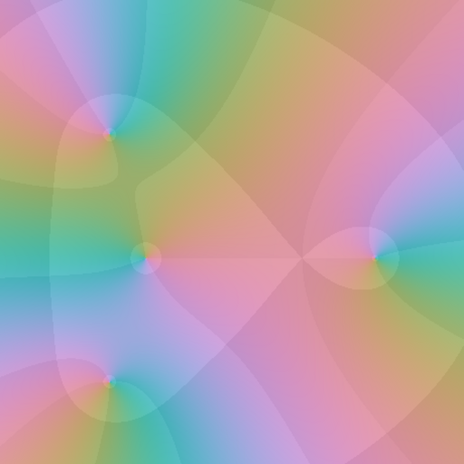
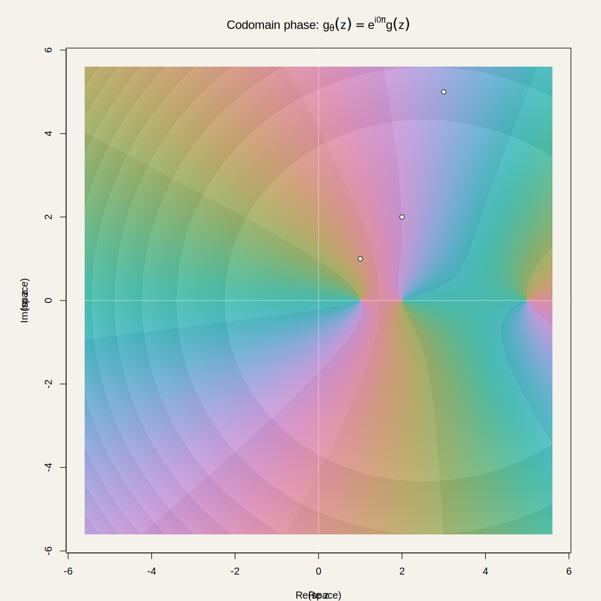

Add
Choose zero or pole, then tap the portrait. Opposite factors cancel at the same point.

WegertPhase portraits of rational functions
Add factors on the complex plane and drag them. Pan or pinch to zoom. The portrait and formula update from the same state.
v0.1.50 prerelease · public test signing key

g(z) = (z − 1)(z − 2)(z − 5)Controls
Zeros and poles are the editable state. The formula and portrait read that same state.
Choose zero or pole, then tap the portrait. Opposite factors cancel at the same point.
Drag a marker to move its factor. Drag empty space to pan the visible domain.
Pinch to change scale without changing the underlying factor coordinates.
The displayed rational formula uses the same zeros and poles as the renderer.
Colour
The reusable colour core takes the value of a complex function. Function construction stays upstream. The mapping follows the phase-portrait approach developed by Elias Wegert.
Elias Wegert, Visual Complex Functions →Android
Native C and GLES. The prerelease APK includes ARM64 and ARMv7 device builds.
Source
Readable source lives in code/. Android packaging, tests, CI, and release machinery live under _/build/.
cd _/build
gradle :app:assembleDebug